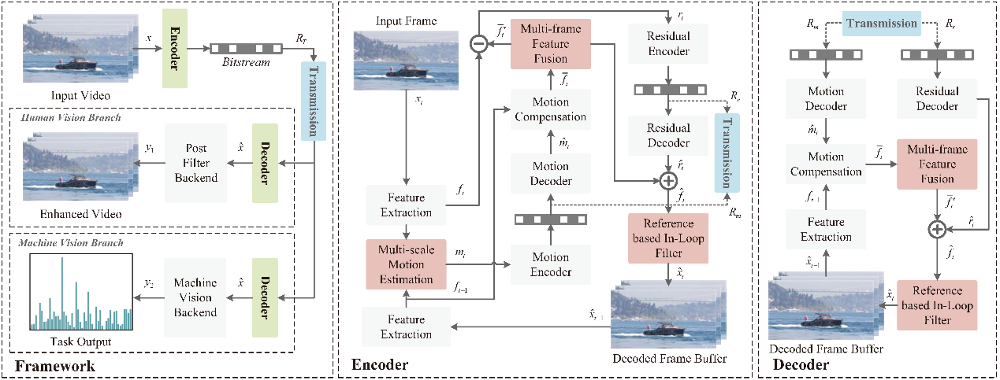
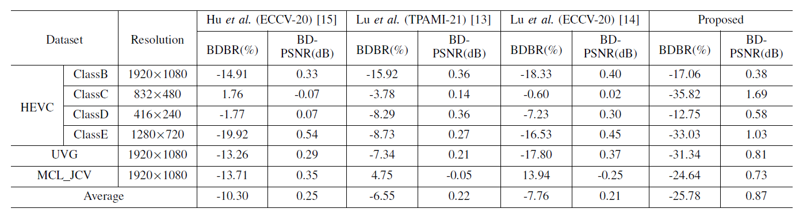
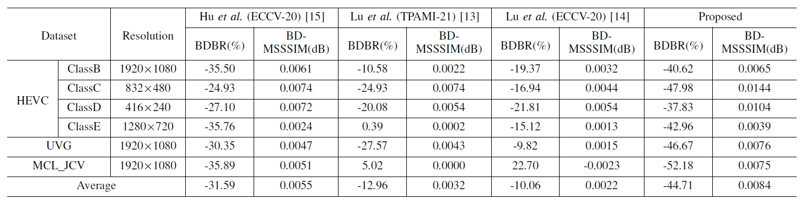
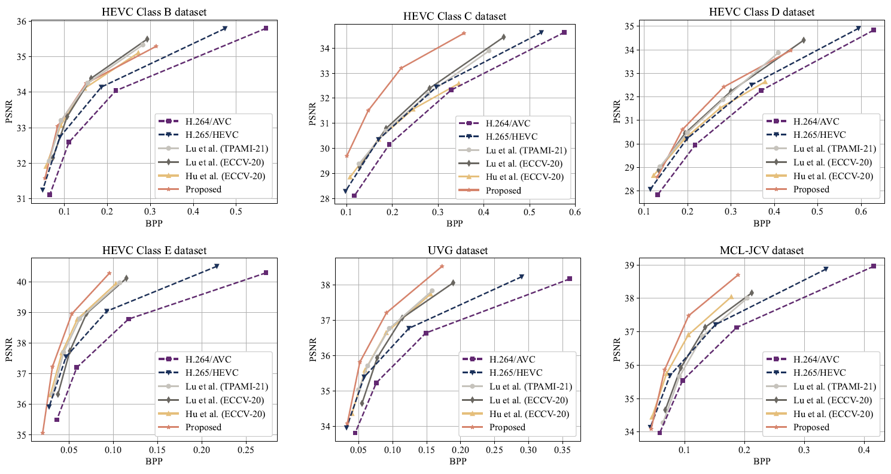
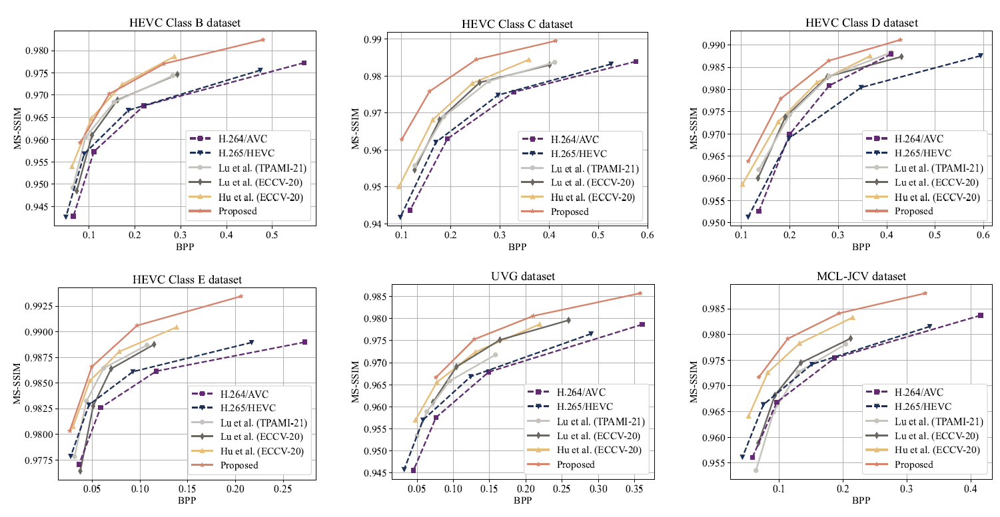
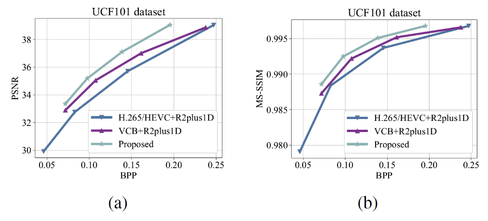
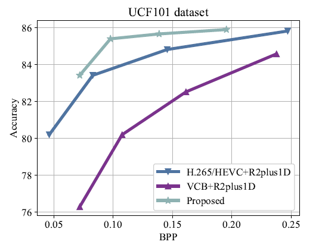

Task-Driven Video Compression for Humans and Machines: Framework Design and Optimization
Xiaokai Yi, Hanli Wang, Sam Kwong and C.-C. Jay Kuo
Overview:
Learned video compression has developed rapidly and achieved impressive progress in recent years. Despite efficient compression performance, existing signal fidelity oriented or semantic fidelity-oriented video compression methods limit the capability to meet the requirements of both machine and human vision. To address this problem, a task-driven video compression framework is proposed to flexibly support vision tasks for both human vision and machine vision. Specifically, to improve the compression performance, the backbone of the video compression framework is optimized by using three novel modules, including multi-scale motion estimation, multi-frame feature fusion, and reference based in-loop filters. Then, based on the proposed efficient compression backbone, a task-driven optimization approach is designed to achieve the trade-off between signal fidelity-oriented compression and semantic fidelity oriented compression. Moreover, a post-filter module is employed for the framework to further improve the performance of the human vision branch. Finally, rate-distortion performance, rate-accuracy performance, and subjective quality are employed as the evaluation metrics, and experimental results show the superiority of the proposed framework for both human vision and machine vision.
Method:
An overview of the proposed task-driven video compression framework is shown in Fig. 1. First, a task-driven video compression framework is proposed, which exploits compression model and optimization technique to extract compact representations from video for both human perception and machine analysis. Second, we design a compression model including three novel modules: multi-scale motion estimation to capture explicit motion representation, multi-frame feature fusion to obtain accurate predicted features, and reference based in-loop filter to refine reconstructed features. Third, a task-driven optimization approach is devised to optimize the proposed video compression framework for both human and machine vision tasks, which can achieve a trade-off between signal fidelity and semantic fidelity. Finally, the proposed task-driven video compression framework is applied to the task of action recognition, and the experimental results verify the impressive performances achieved by the proposed framework.

Fig. 1. The architecture of the proposed task-driven video compression framework.
Results:
For evaluating the proposed video compression backbone, the rate-distortion performance is calculated. Specifically, the metric of bits per pixel (BPP) is used to evaluate the number of bits required for motion compression and residual compression. Peak signal-to-noise ratio (PSNR) and multi-scale structural similarity (MS-SSIM) are used to evaluate the distortion between the reconstructed frames and the raw frames. The comparison results are summarized in Table 1 and Table 2. Moreover, to intuitively show the rate-distortion performance, the rate-distortion curves of the competing methods on different datasets are presented in Fig. 2 and Fig. 3. For evaluating the entire proposed framework, BPP and machine task accuracy are used to measure rate-accuracy performance for machine vision, while BPP and video reconstruction distortion are used to measure rate-distortion performance for human vision. The results of the rate-distortion performance comparison and rate-accuracy performance comparison are shown in Fig. 4 and Fig. 5, respectively.
Table 1
BDBR (%) and BD-PSNR (dB) results of the proposed video compression backbone and other competing compression methods when compared to H.265/HEVC.

Table 2
BDBR (%) and BD-MSSSIM (dB) results of the proposed video compression backbone and other competing compression methods when compared to H.265/HEVC.


Fig. 2. Performance comparison of video compression methods in terms of BPP and PSNR.

Fig. 3. Performance comparison of video compression methods in terms of BPP and MS-SSIM.

Fig. 4. Rate-distortion performance comparison of different video compression frameworks. (a) Distortion measured by PSNR. (b) Distortion measured by MS-SSIM.

Fig. 5. Rate-accuracy performance comparison of different video compression frameworks.
Source Code:
Original illustration: image placeholderTDVC2.0.zip
Citation:
Please cite the following paper if you find this work useful:
Xiaokai Yi, Hanli Wang, Sam Kwong and C.-C. Jay Kuo. Task-Driven Video Compression for Humans and Machines: Framework Design and Optimization, IEEE Transactions on Multimedia, vol. 25, pp. 8091-8102, Dec. 2023. DOI: 10.1109/TMM.2022.3233245.